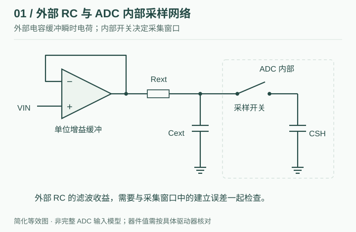
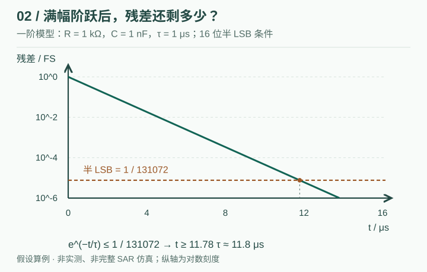

精密 SAR ADC 的输入在采集阶段会连接内部采样电容。前级需要在有限时间内把电压建立到要求的精度。外部 RC 可以限制宽带噪声、缓冲电荷回冲，也可能让输入建立变慢。
先找采集窗口有多长
从 ADC 时序图找出 acquisition time，结合实际采样速率与接口时序判断可用建立时间。转换周期中并非每一段都能给输入采样电容充电。多路复用器还会让相邻通道之间产生大幅电压阶跃。
用单极点模型看数量级
若输入是满量程阶跃、仅考虑一阶 RC，要将残差压到 N 位的半个 LSB 以内，需 t ≥ (N + 1) × ln(2) × RC。16 位约为 11.8 个时间常数。
例如 R = 1 kΩ、C = 1 nF，时间常数为 1 μs，按此模型需约 11.8 μs。实际链路还有运放大信号建立、ADC 内部开关及电容，因此这个计算只用于发现明显不够的时间余量。


滤波器和驱动放大器一起选
核对运放的摆率、规定精度下的建立时间、噪声、输入共模与输出摆幅。输出直接带电容时还要检查稳定性。依据 ADC 推荐输入网络和放大器资料，联合确定串联电阻与电容。
用通道跳变做验证
先固定直流输入检查静态误差，再比较不同采样率和通道切换顺序。让相邻通道跨较大幅度跳变，观察首个样本和后续样本的差异。还需按信号带宽设计抗混叠滤波，驱动端的电荷回冲 RC 不一定承担同样的任务。